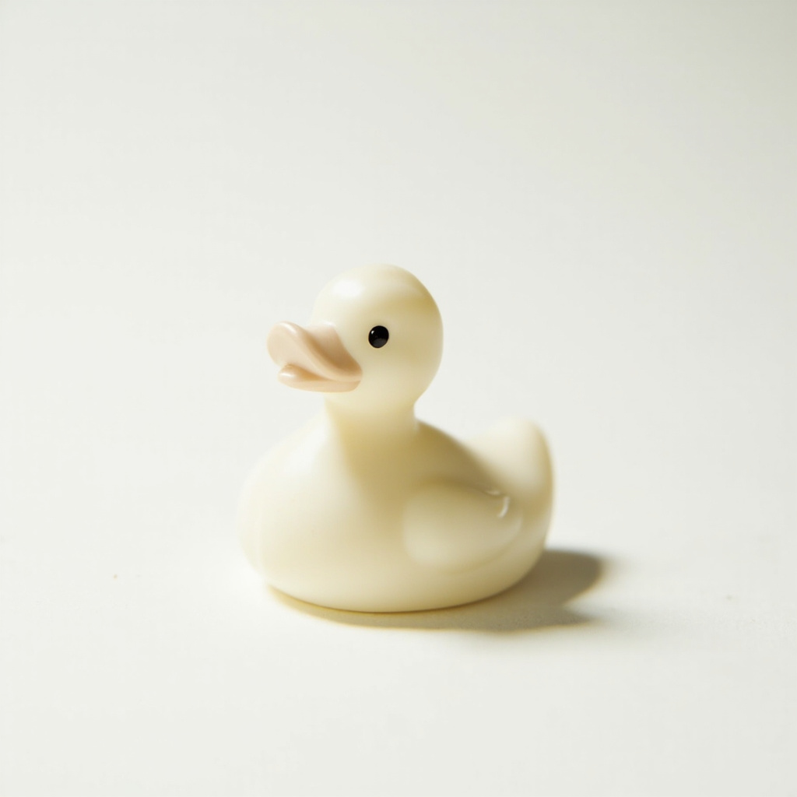
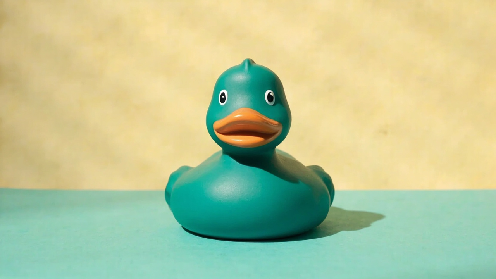
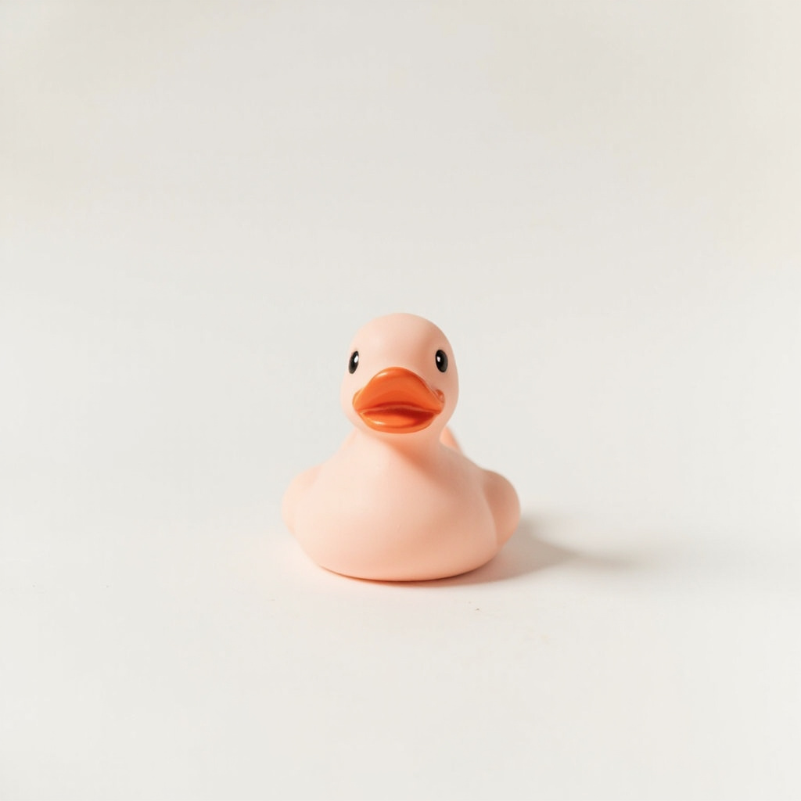
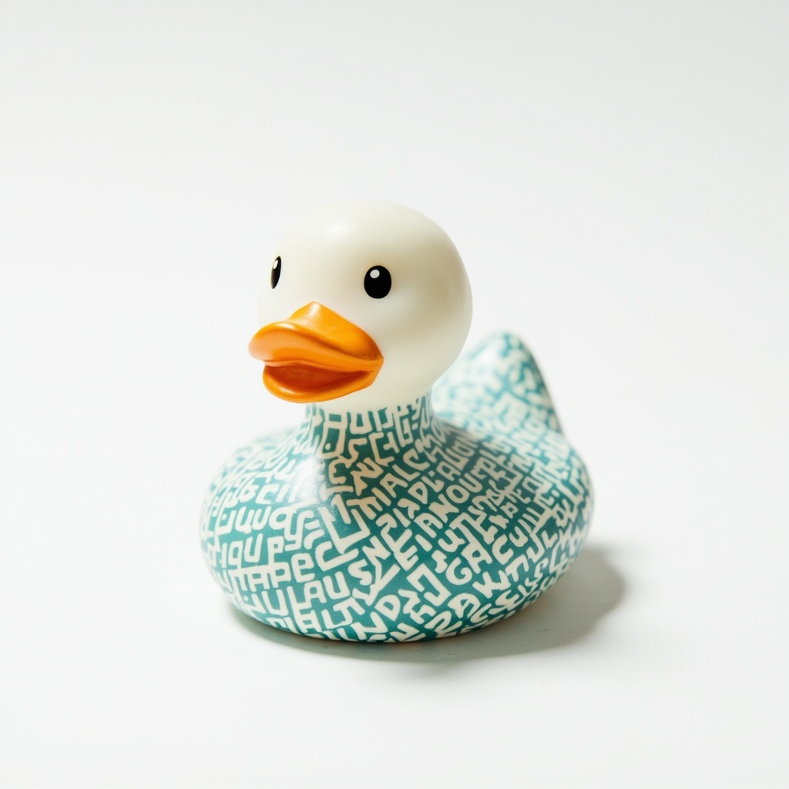
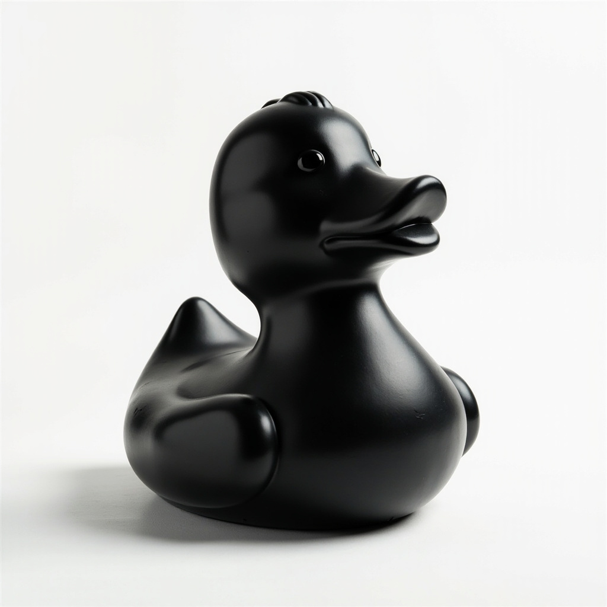
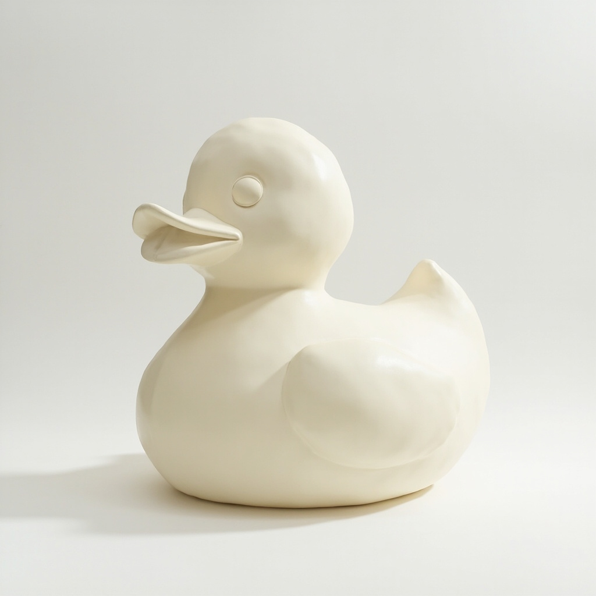

Vol. IV
·
Fall MMXXVI
·
Collectors' Edition
A size-ladder study, photographed in porcelain,
set in heavy type against a flat teal field.
ducks.

A ladder in five sizes.
Click any node to read the specimen card. The line runs from a keychain-scale 4 cm silhouette to a 3 m public installation.




Five finishes.
One silhouette.
The line keeps one outline constant and varies only finish, scale, and surface treatment. Click any plate to open its specimen card.
§04 — Colophon
Printed once, in an edition of twelve, on the Static press.
- Art Direction
- graphicbyr1
- Photography
- Studio Ladder · Copenhagen
- Subject
- Found on a hill, holding a case
- Stock
- 120 gsm uncoated · halftone grain upper third
- Binding
- Saddle-stitched · Swiss fold
- Edition
- 04 of 12 · Fall MMXXVI · Collectors'
The cover was shot on the eleventh day of October. The subject was found on the hill with a case in hand, and agreed to keep still for one frame.